KATALOG INVENTARIS
Koleksi alat musik tradisional nusantara dan modern yang siap disewakan untuk melengkapi pementasan atau acara spesial Anda.
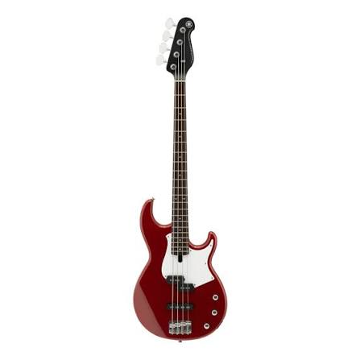
Alat musik petik bass modern
Tersedia: 1 Unit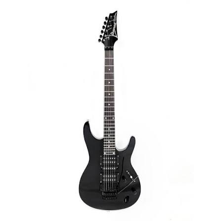
Gitar elektrik untuk pertunjukan
Tersedia: 1 Unit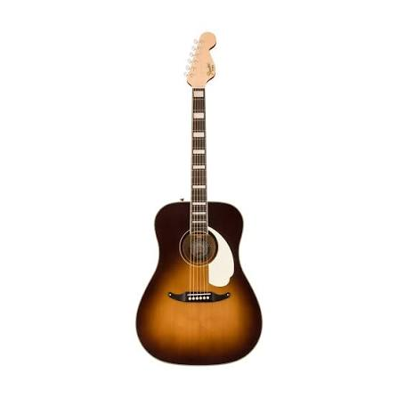
Gitar akustik standar
Tersedia: 1 Unit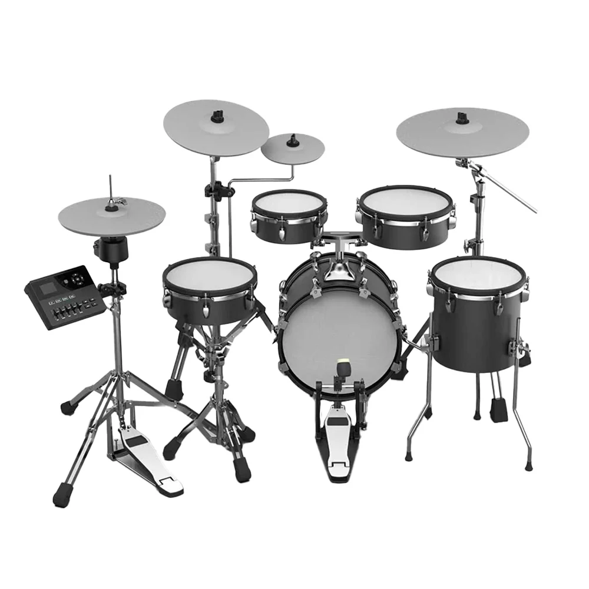
Set drum akustik lengkap
Tersedia: 1 Unit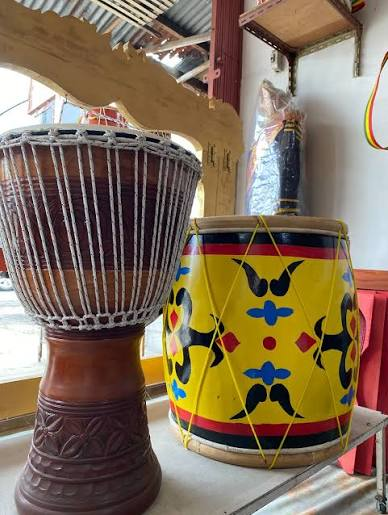
Gong kecil melodis khas Minang
Tersedia: 1 SetPerangkat musik tradisional
Tersedia: 1 Set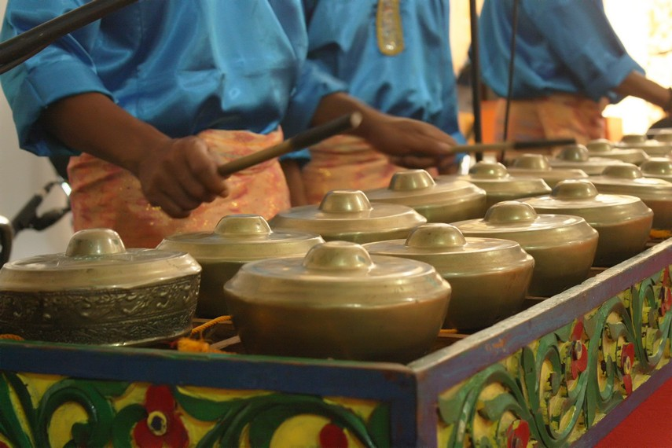
Talempong pengatur tempo/ritme
Tersedia: 1 Set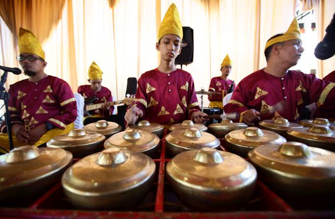
Talempong ukuran khusus
Tersedia: 1 Set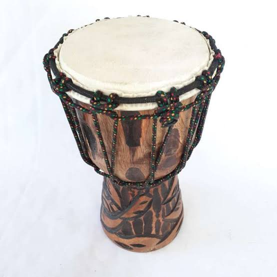
Gendang perkusi tradisional
Tersedia: 1 Unit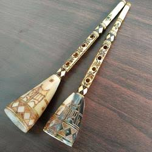
Alat musik tiup tradisional
Tersedia: 3 Unit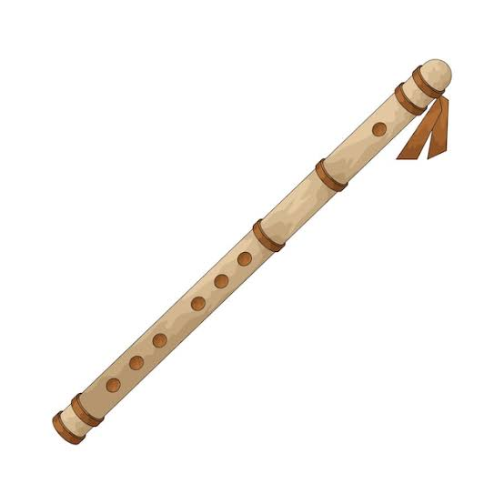
Suling bambu tradisional
Tersedia: 5 Unit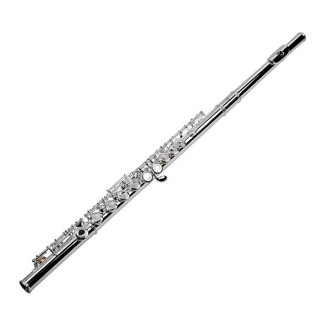
Suling tiup modern
Tersedia: 2 Unit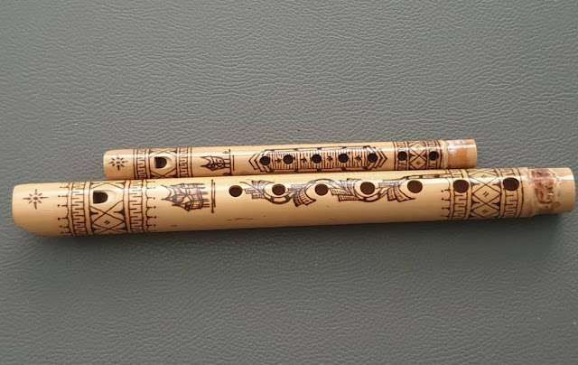
Suling khas Minangkabau
Tersedia: 3 Unit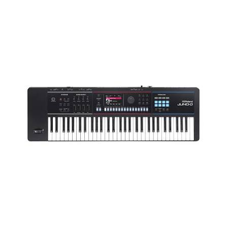
Keyboard synthesizer elektronik
Tersedia: 1 Unit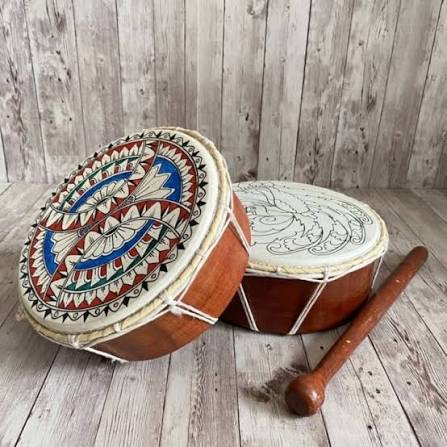
Gendang besar tradisional
Tersedia: 3 Unit